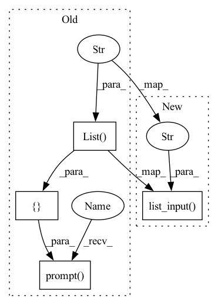

Pattern ID :2456

Before Change
print()
projectManager = ProjectManager()
projects = projectManager.get_projects()
questions1 = [
inq.List("project_name",
message="Select project to load",
choices=projects),
inq.Text("weights_keypoint_detect",
message="Path to ".pth" KeypointDetect weights file",
validate = lambda _, x: ((os.path.isfile(x) and x.split(".")[-1] == "pth") or x == "")),
]
questions2 = [
inq.Text("weights_hybridnet",
message="Path to ".pth" Hybridnet weights file",
validate = lambda _, x: ((os.path.isfile(x) and x.split(".")[-1] == "pth") or x == ""))
]
questions3 = [
inq.Text("num_epochs",
message="Set Number of Epochs to train for",
validate = lambda _, x: (x.isdigit() and int(x) > 0),
default = 100),
inq.List("mode",
message="Select training mode",
choices=["3D_only", "last_layers", "bifpn", "all"]),
]
settings1 = inq.prompt(questions1)
project_name = settings1["project_name"]
weights_keypoint_detect1 = settings1["weights_keypoint_detect"]
if weights_keypoint_detect1 == "":
weights_keypoint_detect = None
After Change
print()
projectManager = ProjectManager()
projects = projectManager.get_projects()
project_name = inq.list_input("Select project to load", choices=projects)
weights_keypoint_detect = inq.text("Path to ".pth" KeypointDetect weights file",
validate = lambda _, x: ((os.path.isfile(x)
and x.split(".")[-1] == "pth") or x == ""))
In pattern: SUPERPATTERN
Frequency: 3
Non-data size: 4
Instances
Fragment ID: 10456287
Project Name: jarvis-mocap/jarvis-hybridnet
Commit Name: acbebe0e436c68a4e75e960ac0570c3e06fa1abf
Time: 2022-03-17
Author: jarvismocap@gmail.com
File Name: jarvis/ui/interactive_cli/train_cli.py
M Class Name: AnonimousClass
N Class Name: AnonimousClass
M Method Name: train_hybridnet(0)
N Method Name: train_hybridnet(0)
M Parent Class:
N Parent Class:
M File Name: jarvis/ui/interactive_cli/train_cli.py
N File Name: jarvis/ui/interactive_cli/train_cli.py
M Start Line: 157
M End Line: 193
N Start Line: 120
N End Line: 138
'>
Before Change
def plot_error_histogram():
cls()
path = get_analysis_path()
use_cutoff_q = {
inq.List("use_cutoff",
message ="Use Error Cutoff? (Values above cutoff will be grouped in one bin)",
choices =["Yes", "No"], default = "No")
}
cutoff = -1
if inq.prompt(use_cutoff_q)["use_cutoff"] == "Yes":
cutoff_q = [
inq.Text("cutoff",
message="Cutoff Value",
After Change
add_more_data = True
additional_data = {}
while add_more_data:
add_more = inq.list_input( "Add another ".csv" file containing "
"predictions?", choices =["Yes", "No"], default = "No")
if add_more == "Yes":
pred_name = inq.text("Path to prediction ".csv" file",
validate = lambda _, x: (os.path.isfile(x)
and x.split(".")[-1] == "csv")),
'>
Fragment ID: 10456286
Project Name: jarvis-mocap/jarvis-hybridnet
Commit Name: acbebe0e436c68a4e75e960ac0570c3e06fa1abf
Time: 2022-03-17
Author: jarvismocap@gmail.com
File Name: jarvis/ui/interactive_cli/analyze_cli.py
M Class Name: AnonimousClass
N Class Name: AnonimousClass
M Method Name: plot_error_histogram(0)
N Method Name: plot_error_histogram(0)
M Parent Class:
N Parent Class:
M File Name: jarvis/ui/interactive_cli/analyze_cli.py
N File Name: jarvis/ui/interactive_cli/analyze_cli.py
M Start Line: 110
M End Line: 123
N Start Line: 107
N End Line: 126
'>
Before Change
analysis_path = os.path.join(project.parent_dir,
project.cfg.PROJECTS_ROOT_PATH, project_name,
"analysis")
data_q = [
inq.List("analysis_path",
message ="Select Anlysis Set to load",
choices =os.listdir(analysis_path))
]
analysis_set = inq.prompt(data_q)["analysis_path"]
path = os.path.join(analysis_path, analysis_set)
return path
After Change
analysis_path = os.path.join(project.parent_dir,
project.cfg.PROJECTS_ROOT_PATH, project_name,
"analysis")
analysis_set = inq.list_input("Select Anlysis Set to load",
choices = sorted(os.listdir(analysis_path))[::-1])
path = os.path.join(analysis_path, analysis_set)
return path
'>
Fragment ID: 10456284
Project Name: jarvis-mocap/jarvis-hybridnet
Commit Name: acbebe0e436c68a4e75e960ac0570c3e06fa1abf
Time: 2022-03-17
Author: jarvismocap@gmail.com
File Name: jarvis/ui/interactive_cli/analyze_cli.py
M Class Name: AnonimousClass
N Class Name: AnonimousClass
M Method Name: get_analysis_path(0)
N Method Name: get_analysis_path(0)
M Parent Class:
N Parent Class:
M File Name: jarvis/ui/interactive_cli/analyze_cli.py
N File Name: jarvis/ui/interactive_cli/analyze_cli.py
M Start Line: 86
M End Line: 102
N Start Line: 91
N End Line: 99